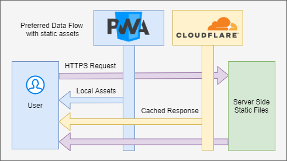

This is by no means the best way to accomplish what I set out to do, but it does work 😅. This is how the new homepage for the Assistant for No Man's Sky Apps will be generated.
Problem statement
I want the home page for the Assistant for No Man's Sky to be a static page. I want as few API calls and functionality on the website as possible. At the time of writing the home page is an Angular app with quite a few pages of tools and admin functions, with most pages belonging to modules that are lazy loaded. Well this has worked; it has started making issues with out of sync Javascript modules coming from ServiceWorker caching as well as Cloudflare caching. Also, the page's purpose has strayed from being a promotional site to a bulky tool.
Common solutions
Static Site generator: There are many many static site generators, although after setting up a few of them I was not impressed with the resulting asset sizes.
Server Side Rendered: I know C# MVC and Razor quite well, so this would have been an easier option to use.
ASP.Net MVC solution
In the above image we can see the number of layers that a request has to go through for a view to be rendered. Now with Cloudflare, the response will be cached and this will reduce the load on the server as well as decrease the number of requests to the API and Database. But this is still bulky, there are quite a few moving parts. If the API goes down I might only notice after Cloudflare's cache has expired and thereafter the wrong data will be cached for some time. It is also a lot more expensive to host a ASP.Net application compared to static files (although thanks to DotNet Core, this isn't much of an issue anymore).
What I want from that data flow is to grab that HTML that is returned as well as the assets and host it somewhere.
First Steps
So I decided to go down the route of ASP.Net MVC and manually grab the View that the server responds with, add that to a repository with the static assets and let my CI (Continuous Integration) and CD (Continuous Deployment) pipeline in Azure DevOps release the files to my server of choice. Once the website was in a good state, I started to wonder if there was a away to automate the process.
RazorLight
I found this package (https://github.com/toddams/RazorLight) that is meant to be used for generating HTML emails, but will work for this situation well enough. With RazorLight I could still use my .cshtml files in my MVC project, but now I can get the output as an HTML string, which I can then write to a file index.html.
Perfect! Now I have the View component as in the image below, time to automate.
Automation
The first step is to get the console app to generate the files I need in my CI (building) process. I love using Azure DevOps, and they love DotNet Core as much (if not more) as I do. Once the CI process has been setup I should be left with 1 index.html file and a few assets that are used by the index.html. Thereafter it is simple to deploy these files (still using Azure DevOps) in the correct structure onto a server.
Now, how up to date the information will be, relies on how often this process runs. I don't want this to run every night at midnight (in my time zone) for example, as this would interrupt my biggest user base, the USA. It would also be quite unnecessary as the information displayed does not change that often. Luckily Azure DevOps has an API that I can use to trigger my CI CD process, and I am in control of the API that contains all of my data. So when data is changed through my API, I can make a request to Azure DevOps to generate the static files for my website. Meaning that my static website will almost always be up to date.
Future Improvements
Since the website's files will be changing less frequently I am a bit more confident in using a ServiceWorker, making the site a PWA (Progressive Web App) to cache all of the front-end files.

Conclusion
I will be the first to admit that this is not the cleanest way to achieve a static site. But it does have a few advantages.
Great SEO
- There is no need to deal manually with HTML and CSS.
- It is automated.
- I did not have to learn a whole bunch of new tech as I would have had to with Nuxt, Gatsby, Hexo, etc.
- This is pretty cool 😎